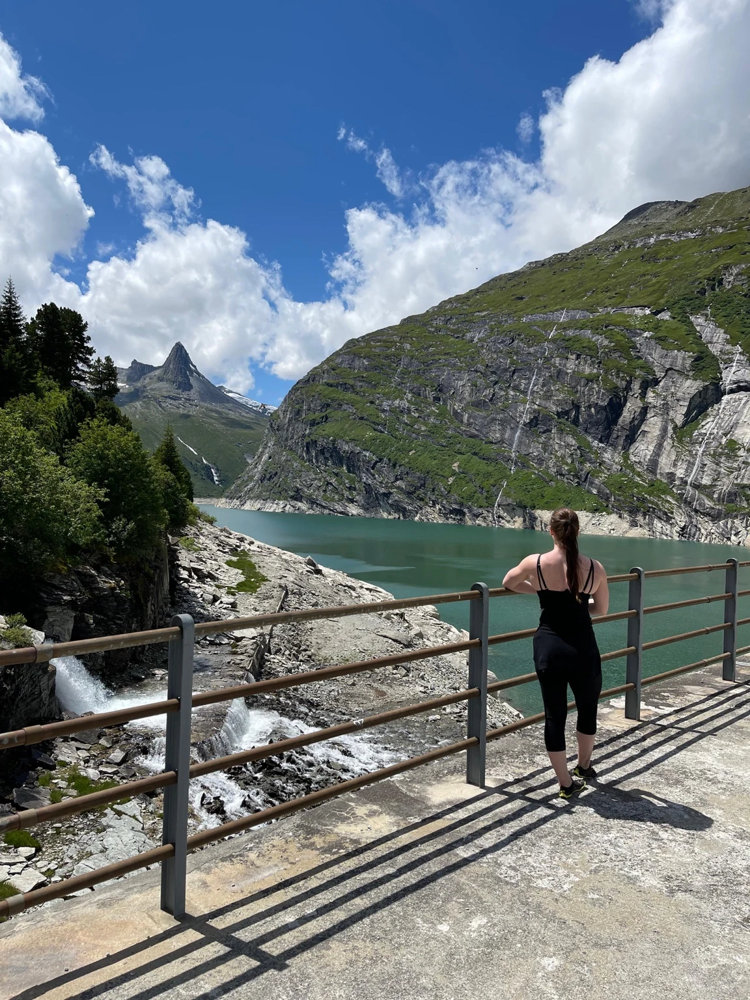

Alltag, Beruf & Training
Wir betrachten deine Tagesstruktur, Ernährung, Schlafgewohnheiten und Trainingsbelastung. Gemeinsam suchen wir umsetzbare Schritte, die zu deinen Anforderungen und Erholungsbedürfnissen passen.
Coaching / Wohlbefinden & Leistung
Persönliche Lifestyle-Beratung für Frauen und Männer, die ihr Wohlbefinden und ihre Leistungsfähigkeit bewusst unterstützen möchten. Ernährung, Schlaf, Regeneration, Trainingsbelastung und Supplemente betrachten wir gemeinsam.

Ob im Berufsalltag, in der Freizeit oder beim Training: Wir schauen auf deine Ziele, Gewohnheiten und die Balance zwischen Belastung und Erholung. Auch Männer finden hier Unterstützung bei Fragen zu Ernährung, Regeneration, Supplementen und hormonellem Wohlbefinden im Lifestyle-Kontext. Für Frauen bleiben Zyklus und Veränderungen rund um hormonelle Verhütung Teil der Begleitung.
Zeitaufwand und Kosten werden vorab besprochen.
Vor Ort oder online.
Beratung anfragen ↗Deine Themen im Mittelpunkt
Wir betrachten deine Tagesstruktur, Ernährung, Schlafgewohnheiten und Trainingsbelastung. Gemeinsam suchen wir umsetzbare Schritte, die zu deinen Anforderungen und Erholungsbedürfnissen passen.
Wir besprechen vorhandene Produkte und mögliche Ergänzungen deiner Ernährung. Auswahl und Einnahmeplanung orientieren sich an deiner Ernährung, den Herstellerangaben und gegebenenfalls ärztlichen Empfehlungen. Mögliche Wechselwirkungen mit Medikamenten klärst du ärztlich oder in der Apotheke ab.
Für Frauen bietet die Beratung weiterhin Raum für Zyklus, Selbstwahrnehmung und Veränderungen rund um hormonelle Verhütung. Im Mittelpunkt stehen passende Gewohnheiten in Ernährung, Training und Regeneration.
Vorhandene Laborbefunde
Du hast bereits ärztlich beurteilte Blut- oder Hormonwerte? Auf Wunsch berücksichtigen wir die daraus vorliegenden ärztlichen Empfehlungen bei deiner Ernährungs-, Supplement- und Lifestyle-Planung. Das gilt für Frauen und Männer.
Die medizinische Bedeutung der Werte, mögliche Ursachen und ein allfälliger Behandlungsbedarf werden ärztlich geklärt. Im Coaching geht es darum, passende Schritte für deinen Alltag zu finden.
Möglicher Ablauf
Ca. 1 Stunde zum Kennenlernen und Besprechen deiner Anliegen.
Wenn bereits ärztlich beurteilte Laborbefunde vorliegen, können ca. 1–2 weitere Stunden zur Vorbereitung der Lifestyle-Beratung hinzukommen. Der Umfang wird vorab vereinbart.
Ca. 1 Stunde für mögliche Schritte in Ernährung, Training und Lifestyle.
Die Beratung umfasst Ernährung, Training und Lifestyle. Sie beinhaltet keine medizinische Auswertung von Hormonwerten, keine Diagnose und keine Behandlung von Hormonstörungen oder anderen Erkrankungen. Laboruntersuchungen und die medizinische Beurteilung der Ergebnisse erfolgen durch entsprechend qualifizierte Fachpersonen. Anhaltende Beschwerden, auffällige Werte und Entscheidungen über Medikamente, Hormonpräparate oder hormonelle Verhütung gehören in ärztliche Betreuung. Es werden keine Heilungs- oder Leistungsversprechen abgegeben.
Dein nächster Schritt
Erzähl mir, wo du stehst und was du verändern möchtest.
Beratungsgespräch anfragen ↗